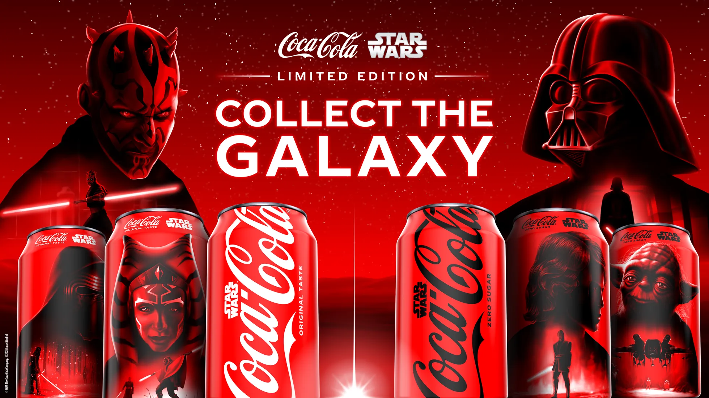
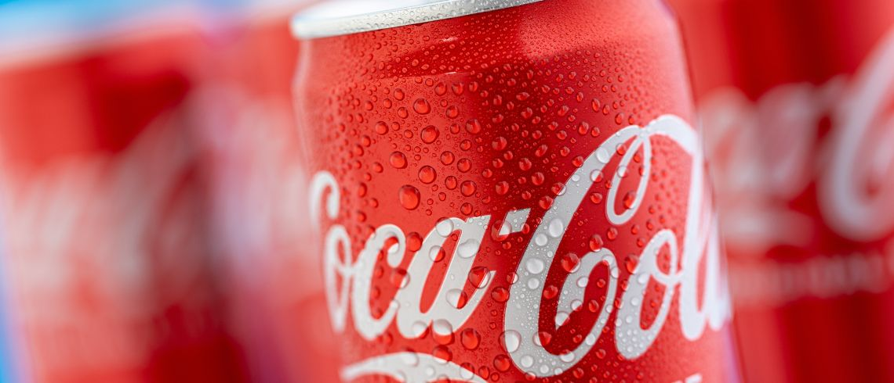
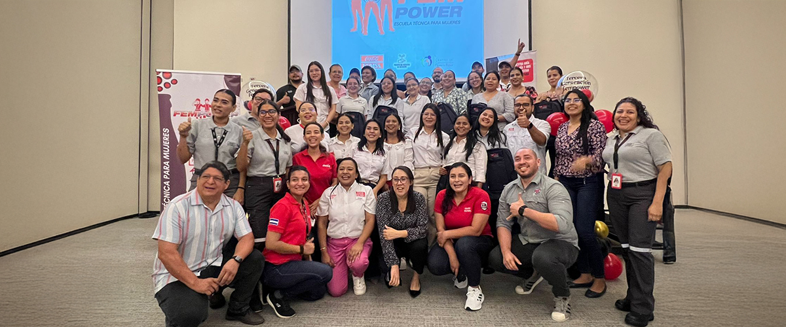

Coca-Cola y Star Wars celebran el poder unificador del fandom con empaques coleccionables y más

Los personajes clave que han dado vida a la saga de Star Wars en la pantalla grande y chica (desde Luke Skywalker y
Darth Vader hasta Grogu y The Mandalorian) adornarán... latas y botellas de
edición limitada de Coca-Cola y Coca-Cola Zero Sugar este verano como parte de una campaña global que celebra la
capacidad de las pasiones compartidas para unir y elevar.Las latas coleccionables estarán disponibles en tiendas de mercados selectos de Norteamérica, Latinoamérica, Europa, Japón y Asia Pacífico Sur. Los códigos QR escaneables en los empaques de edición limitada y en la creatividad exterior ofrecerán una experiencia inmersiva de Realidad Aumentada (RA) donde los fans podrán grabarse un video y compartir mensajes inspiradores de comunidad y conexión, al estilo de una transmisión holográfica de Star Wars.
Renovación en embalaje de coca-cola

Coca-Cola reafirma su compromiso con la sostenibilidad a través de su iniciativa Un Mundo Sin Residuos, con la que busca que todos sus envases sean 100 % reciclables para 2025 y al menos el 50 % de material reciclado para 2030. La industria de bebidas enfrenta un desafío constante en la reducción del uso de plástico virgen... y Coca-Cola ha
tomado medidas concretas para abordar este problema. La evolución de la tecnología de envasado, la mejora en la infraestructura de reciclaje y el compromiso continuo de los consumidores serán factores determinantes en el éxito de esta iniciativa. Hasta el momento, los esfuerzos de Coca-Cola reflejan un compromiso sólido para reducir su huella ambiental y establecer un precedente dentro de la industria de bebidas. Con un enfoque integral que combina innovación, colaboraciones estratégicas y educación al consumidor, la empresa busca transformar el modelo de producción y gestión de residuos en el sector.
Coca-Cola FEMSA inaugura el ciclo 2025 de la Escuela Técnica de Mujeres en Nicaragua

Coca-Cola FEMSA, el mayor embotellador del Sistema Coca-Cola por volumen de ventas, inauguró el ciclo 2025 de la Escuela Técnica para Mujeres. Esta iniciativa, que cumple...
su tercer año, es parte del compromiso de Coca-Cola de seguir impulsando la educación de mujeres. La evolución de la tecnología de envasado, la mejora en la infraestructura de reciclaje y el compromiso continuo de los consumidores serán factores determinantes en el éxito de esta iniciativa. Hasta el momento, los esfuerzos de Coca-Cola reflejan un compromiso sólido para reducir su huella ambiental y establecer un precedente dentro de la industria de bebidas. Con un enfoque integral que combina innovación, colaboraciones estratégicas y educación al consumidor, la empresa busca transformar el modelo de producción y gestión de residuos en el sector.